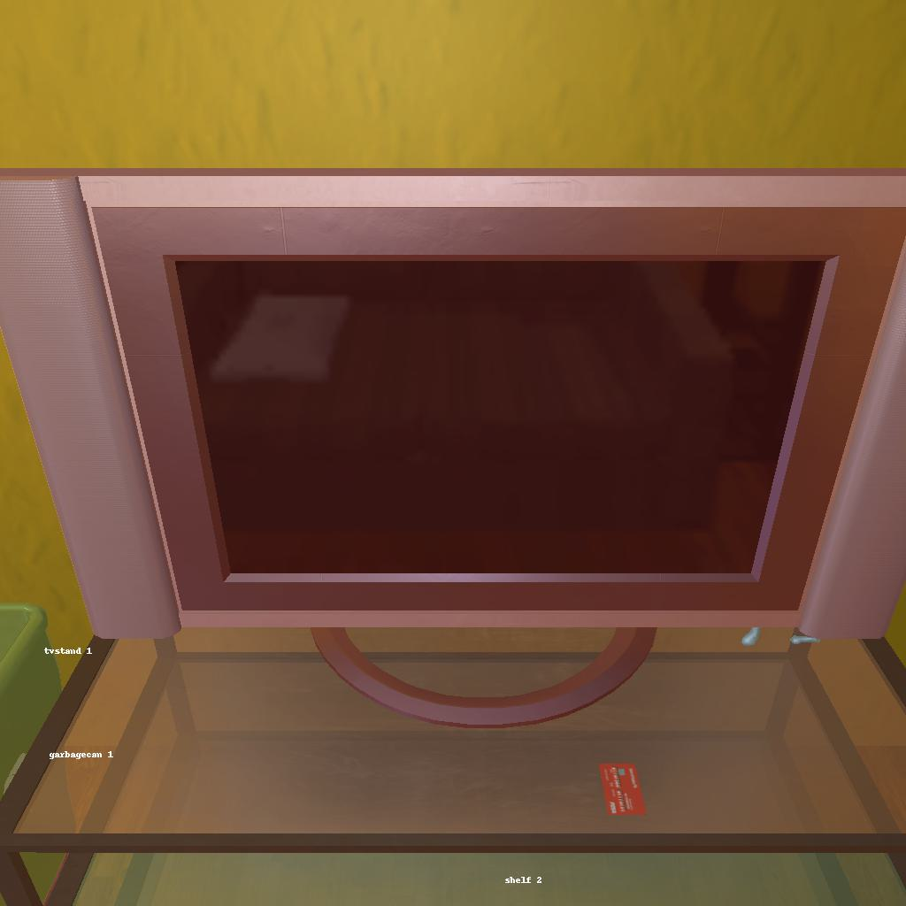

---------------------------------------------------------task: 3---------------------------------------------------------
--------------------------------------------------------------------------------------------------------------------------------------------------------------------
--------------------------------------------------------------------------------------------------------------------------------------------------------------------
Step:--------------------------------------------------------------------------0-------------------------------------------------------------------------------
----------------------------------------
VLM Prompt:
Image1:
**Instruction**
1. Analyze the provided image to identify all visible household objects, focusing on those relevant to the task description "look at plate under the floorlamp."
2. Use the analysis of the image and the task hint "The agent must find an object of the desired type, locate and turn on a light source with the desired object in-hand." to answer the question: what is the most reasonable action in the choices for the task description "look at plate under the floorlamp"?
4. Decide and write the answer using the template: The answer is: (i): , where i is the real number. If there is no desired object in the image, search every place based on **Initial Observation** to find the object. And if no one is exactly correct, choose a similar answer.
**Initial Observation**
You are in the middle of a room. Looking quickly around you, you can see armchair (1), garbagecan (1), tvstand (1), shelf (1-5), sofa (1), coffeetable (1), sidetable (1-2), drawer (1)
**Answer Choices**
(1): go to armchair 1
(2): go to garbagecan 1
(3): go to tvstand 1
(4): go to shelf 1
(5): go to shelf 2
(6): go to sofa 1
(7): go to coffeetable 1
(8): go to sidetable 1
(9): go to sidetable 2
(10): go to drawer 1
(11): go to shelf 3
(12): go to shelf 4
(13): go to shelf 5
**Answer**
Let's think step by step by following the instructions.
----------------------------------------
----------------------------------------
Original Response:
Firstly, we do not see any floor lamp or plate in the provided image, so we need to search other places based on the "Initial Observation" list. The task description mentions looking at a plate under a floor lamp, which suggests we should be looking for a plate near a light source, possibly on a surface where a plate could be placed.
Given the provided options, a plate is unlikely to be found in the garbagecan, and it's not usual to keep plates on an armchair, sofa, or inside a drawer. A plate could potentially be on a tvstand, but it's more likely to be found on a table or shelf where items are commonly displayed or stored.
Of the options listed, a sidetable or coffeetable would be the most reasonable places to look for a plate, as these surfaces are at the right height for looking at an object and can be located near a floor lamp. However, since there's no specific mention of a floor lamp in the options, and we have to choose based on the possibility of finding a plate, the coffeetable seems like the most appropriate choice as it is a central piece of furniture in a living room and could likely be positioned under a floor lamp.
The answer is: (7): go to coffeetable 1.
----------------------------------------
----------------------------------------
>>> Refine Original VLM Response and Get Pure Action: go to coffeetable 1
----------------------------------------
-----------------------------------------------------------------
Running time: 26.905752182006836 seconds
Total Money: 0.8332200000000002
-----------------------------------------------------------------
-----------------------------------------------------------------
Text Observation:You arrive at loc 6. On the coffeetable 1, you see a floorlamp 1, a laptop 1, a vase 1, a pillow 1, a plate 1, a cellphone 1, a statue 1, a remotecontrol 1, a cellphone 2, and a keychain 1.
-----------------------------------------------------------------
UNSUCCEED